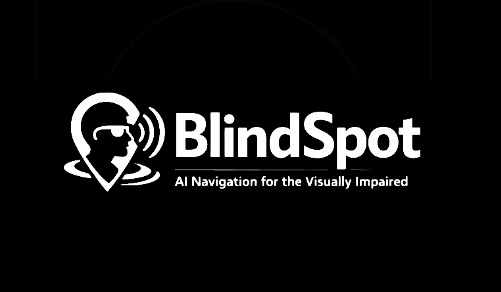

Projects
Deep dive into my technical projects - click any project to expand for full details

3-DOF Robotic Arm with Inverse Kinematics
Arduino-powered robotic arm with analytical inverse kinematics and interactive 3D control dashboard
Project Overview
This project implements a complete robot arm control system combining embedded firmware with desktop visualization. The Arduino runs a real-time inverse kinematics engine that converts 3D coordinates to joint angles and controls servos with smooth interpolation. What makes this project unique is the custom desktop dashboard built with Raylib that provides interactive 3D visualization - you can literally click and drag the end effector in 3D space, and the physical robot arm moves in real-time to match.
The system achieves ±2mm positioning accuracy across a 210mm workspace using a geometric inverse kinematics solution. The Arduino firmware implements Cartesian-space path planning with 20-step interpolation for fluid movement, while the desktop GUI provides intuitive drag-and-drop control alongside precise numerical coordinate input. Serial communication at 115200 baud ensures seamless PC-to-robot coordination with minimal latency.
Technical Implementation
- Inverse Kinematics Engine: Custom geometric solution using law of cosines and triangle decomposition for 3-DOF manipulation with ±2mm accuracy over 210mm workspace
- Interactive 3D Dashboard: C++/Raylib desktop application with real-time 3D visualization, drag-and-drop end effector control, and orbital camera for inspection
- Smooth Motion Planning: Cartesian-space linear interpolation with 20-step path generation creates straight-line trajectories and fluid movement
- Hardware Integration: PCA9685 16-channel PWM driver via I²C provides 12-bit servo control resolution; 3× MG996R servos powered by dedicated 5V/3A supply
- Safety Systems: Workspace boundary validation, self-collision prevention via elbow angle constraints, and per-servo calibration for accurate positioning
- Dual Control Modes: IK mode for position control via 3D coordinates, manual mode for direct servo angle control during testing and diagnostics
Key Challenges
Building the GUI was a major learning curve. I had to implement ray casting to convert mouse clicks into 3D world coordinates, handle orbital camera controls with quaternions, and render the arm in real-time while maintaining smooth serial communication. The trickiest part was making the drag-and-drop feel natural - I needed to constrain the end effector to the robot's reachable workspace while the user dragged it around. If they tried to move it somewhere impossible, the system had to smoothly clamp to the nearest valid position rather than just failing.
On the embedded side, debugging the inverse kinematics was challenging. Small errors in the geometric derivations would cause the arm to move to incorrect positions or twist into singularities where the elbow "flipped" unexpectedly. I had to carefully verify each step of the mathematical solution and add elbow angle constraints to prevent self-collisions. The interpolation system also required careful tuning - too fast and the servos would jitter, too slow and the motion felt sluggish. Running everything within the Arduino's 2KB RAM constraint required memory-optimized code and non-blocking architecture for responsive control.

Speed Racer RL - Reinforcement Learning Racing
Custom 2D racing simulator with Deep Q-Network agent trained using C++ and libtorch
Project Overview
Speed Racer RL is a reinforcement learning project built from scratch, featuring a custom 2D top-down racing simulator written entirely in C++. The project trains a Deep Q-Network (DQN) agent to autonomously navigate racing tracks using LIDAR-style raycasts for environmental perception. Unlike many RL projects that rely on pre-built game engines or simulation frameworks, this system implements everything from the physics engine to the neural network training loop, providing complete control over the learning environment and agent behavior.
The simulator features custom physics including acceleration, drag, steering dynamics, and collision detection with both walls and grass. A checkpoint and lap system tracks progress, while the DQN agent learns optimal racing lines through trial and error. Training runs headless for performance, while trained models can be visualized in real-time using Raylib. The project demonstrates the complete pipeline from environment design to agent training to behavioral analysis, showing how autonomous racing behavior emerges from reward shaping and experience replay.
Technical Implementation
- Custom Physics Engine: Implemented deterministic step-based simulation with realistic vehicle dynamics including speed, friction, steering response, and collision handling
- Perception System: 13 LIDAR-style raycasts spanning -90° to +90° provide normalized distance measurements, creating an 18-dimensional observation space including speed, heading, and position
- Deep Q-Network: Vanilla DQN implementation using libtorch (PyTorch C++) with experience replay buffer and epsilon-greedy exploration strategy
- Reward Shaping: Multi-component reward function balancing checkpoint progress, speed incentives, lap completion bonuses, and penalties for collisions, grass driving, and idle behavior
- Training Infrastructure: Headless training mode for performance with periodic model checkpointing, plus visual replay system using Raylib for behavior analysis
Key Challenges
One of the biggest challenges was reward shaping to produce stable racing behavior. Early reward functions led to degenerate strategies like hugging walls or driving in circles around checkpoints. I had to carefully tune the balance between progress rewards, speed incentives, and collision penalties. Too much emphasis on speed caused reckless driving, while too much penalty for collisions led to overly conservative behavior that never completed laps.
Another challenge was managing the exploration-exploitation tradeoff. I observed an interesting training pattern: early models drove conservatively but reliably completed laps, while later training often led to performance degradation as the agent over-optimized for speed and started crashing. The solution was fine-tuning from stable checkpoints with reduced learning rates and lower epsilon floors, which significantly improved both speed and stability. This taught me that reinforcement learning isn't always monotonically improving - sometimes you need to step back and refine rather than continue pushing forward.

BlindSpot - AI Navigation for Visually Impaired
2x Mac-a-Thon 2026 Winner: Accessibility-first navigation app with AI voice guidance and real-time obstacle detection

Gesture-Controlled RC Car
Computer vision-based RC car controlled by hand gestures using OpenCV and Raspberry Pi
Project Overview
This project combines computer vision, embedded systems, and robotics to create an RC car that responds to hand gestures captured by a camera. The system uses a Raspberry Pi running OpenCV to process video frames in real-time, detect hand positions and gestures, and translate them into motor control commands. The car features a custom-built chassis, L298N motor driver for controlling DC motors, and wireless communication for responsive control.
The computer vision pipeline uses color-based segmentation and contour detection to identify hand positions within the camera frame. Different hand positions in the frame correspond to different driving commands - hands in the upper portion drive forward, lower portion for reverse, and left/right positioning for turning. This creates an intuitive control scheme that feels natural after a brief learning period.
Technical Implementation
- Computer Vision: OpenCV processes camera frames to detect hand position using HSV color space conversion and contour analysis
- Gesture Recognition: Hand position within frame quadrants maps to directional commands (forward, backward, left, right)
- Motor Control: L298N H-bridge driver enables bidirectional DC motor control with PWM speed regulation
- I²C Communication: Reliable sensor data transfer between Raspberry Pi and motor controller using I²C protocol
- Latency Optimization: Frame processing pipeline optimized to minimize delay between gesture and robot response
Key Challenges
The main challenge was achieving low enough latency for responsive control. Initial implementations had noticeable lag between hand movements and car response, making it difficult to drive accurately. I optimized the computer vision pipeline by reducing frame resolution, implementing efficient contour detection algorithms, and minimizing unnecessary processing. Another challenge was handling varying lighting conditions, which I addressed through adaptive thresholding and allowing users to calibrate the color detection range for their environment.

8-Bit Breadboard Computer
Functional 8-bit computer built from integrated circuits following Von Neumann architecture
Project Overview
This project involved building a complete 8-bit computer from discrete logic ICs on breadboards. The computer follows Von Neumann architecture principles with a custom instruction set, featuring components like an ALU, registers, program counter, instruction decoder, and RAM. The goal was to understand computer architecture at the hardware level by implementing each component from basic logic gates and seeing how they work together to execute programs.
The system can execute a custom assembly language I designed, with instructions for arithmetic operations, memory access, conditional branching, and I/O. Building this computer taught me how high-level programming languages are ultimately translated down to simple electrical signals controlling logic gates. Every line of code, every function call, every loop - it all reduces to patterns of voltage changes across wires.
Technical Implementation
- Von Neumann Architecture: Shared memory space for both program instructions and data, with fetch-decode-execute cycle
- 8-bit ALU: Arithmetic Logic Unit built from 74LS181 ICs performs addition, subtraction, and logical operations
- Control Logic: Instruction decoder using ROM and logic gates generates control signals for each instruction type
- Memory System: 16 bytes of RAM using 74LS189 ICs for storing both program and data
- Clock System: 555 timer IC generates clock signal with adjustable frequency for stepping through instructions
Key Challenges
Debugging was extremely challenging since there's no debugger or print statements - just voltage levels on wires. I had to use LEDs and logic probes to trace signals through the system and identify where things went wrong. One particularly frustrating bug took hours to find: a single wire was in the wrong breadboard hole, causing intermittent connections that only failed sometimes. This project taught me patience and systematic debugging methodology.

2D Fighting Game: Turf War
Complete 2D fighting game with advanced combat mechanics and physics-based interactions
Project Overview
Turf War is a 2D fighting game I developed in Python using the Pygame framework. The game features two-player local combat with a variety of moves including attacks, blocking, dashing, and a parry system. I designed the combat mechanics to be skill-based, rewarding timing and strategy over button mashing. The game includes custom sprite animations, physics-based knockback, and responsive controls that make the combat feel satisfying and engaging.
This project was my introduction to game development and taught me about game loops, state management, collision detection, and creating responsive user experiences. I learned how to balance different game mechanics to create interesting strategic choices - for example, the parry system rewards precise timing by allowing players to counter attacks, but missing a parry leaves you vulnerable.
Technical Implementation
- State Machine Architecture: Character states (idle, attacking, blocking, hit-stun) managed through finite state machine for clean animation flow
- Combat System: Frame-based hit detection with active frames, startup frames, and recovery frames for balanced combat timing
- Physics Engine: Custom 2D physics implementation for knockback, gravity, and momentum-based movement
- Input System: Real-time keyboard input processing with input buffering for responsive controls
- Parry Mechanics: Time-window based counterattack system rewards precise timing with frame advantage
Key Challenges
Balancing the game mechanics was surprisingly difficult. Making the parry system work required careful tuning of the timing window - too large and it becomes overpowered, too small and no one will use it. I also had to figure out how to make the combat feel responsive while preventing button mashing from being effective. The solution was implementing recovery frames after attacks, forcing players to commit to their actions and think strategically about when to attack.

Q-ARM Robot End-Effector Design
Lightweight end-effector design optimized for weight reduction and structural integrity
Project Overview
This project was part of my first-year engineering coursework at McMaster University. The task was to design a lightweight end-effector for the Q-ARM robotic platform used in our lab. The design needed to minimize weight while maintaining sufficient structural strength to handle the loads experienced during operation. Weight reduction was critical because lighter end-effectors reduce the torque requirements on the robot's joints and improve overall performance and accuracy.
I approached this as an optimization problem, using CAD software to iterate through multiple designs. Each iteration involved removing material from non-critical areas, adding reinforcement ribs where stress analysis showed high loads, and testing the design virtually before prototyping. This taught me the importance of design iteration and how to balance competing requirements in engineering projects.
Technical Implementation
- CAD Modeling: Autodesk Inventor used for parametric 3D modeling with design intent captured in sketch constraints
- Weight Optimization: Iterative material removal from low-stress regions while maintaining structural integrity
- Geometric Analysis: Careful attention to potential interference points and range of motion limitations
- Design Iteration: Multiple design revisions based on testing and analysis to refine geometry
- Manufacturing Considerations: Design optimized for 3D printing with consideration for print orientation and support structures
Key Challenges
The main challenge was finding the right balance between weight and strength. Removing too much material made the part flexible and weak, but leaving too much material defeated the purpose of the optimization. I had to learn to think critically about where forces would be concentrated and design accordingly. Another challenge was avoiding geometric interference - ensuring the end-effector didn't collide with other parts of the robot during its full range of motion.

Blue Bottle - Gamified Recycling App
WinHacks 2022 winner: Gamified app encouraging recycling through competition and rewards
Project Overview
Blue Bottle won the Most Social Impact award at WinHacks 2022. The concept addresses the problem of low recycling rates among young people by turning recycling into a social, competitive game. Users earn points for recycling water bottles, compete with friends on leaderboards, complete challenges, and unlock rewards. The app uses gamification psychology to make environmental action engaging and habit-forming.
My role focused on UI/UX design and the overall user experience strategy. I designed the complete user flow in Figma, from onboarding through daily usage scenarios. The challenge was making the app simple enough for quick interactions (since users would often be at recycling bins) while including enough depth to maintain long-term engagement through challenges, achievements, and social features.
Technical Implementation
- UI/UX Design: Complete user interface and user flows designed in Figma with focus on accessibility and intuitive navigation
- Gamification Mechanics: Point system, achievement badges, daily challenges, and social leaderboards to drive engagement
- Verification System: Explored computer vision solutions for automated bottle recognition and recycling verification
- Social Features: Friend challenges and group competitions to leverage social pressure for positive behavior change
- Reward Integration: Partnership framework with local businesses to offer tangible rewards for recycling points
Key Challenges
The biggest challenge was designing a verification system to prevent cheating. How do you confirm someone actually recycled a bottle versus just taking pictures of bottles? We explored several solutions including QR codes on bottles, computer vision to detect bottle types, and location-based verification at recycling centers. Another challenge was designing the reward system to be motivating without being the only reason people use the app - we wanted to create genuine behavioral change, not just transactional rewards.